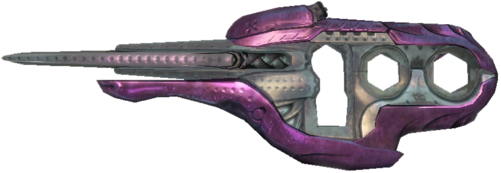
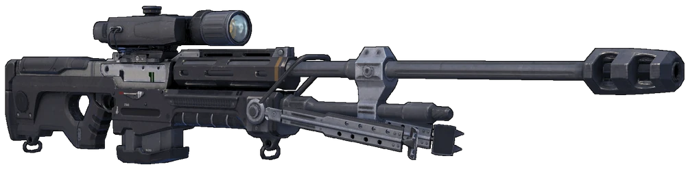

Type 51 Carbine: All around great weapon; I'd alwahys take it over the standard UNSC Assult Rifle whenever I had the chance. It felt good to use in a great span of ranges. I think it's one of the best all around weapons. The only time it did suck was whenever I was fighting the flood.

Sniper Rifle System 99 Anti-Materiel: I loved how it would one tap the bulky dudes in the head. The scarecedy of it's ammo however had me often having to drop the weapon for another one which there was ammo for.